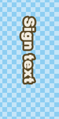
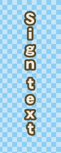

Aegisub / Automation / Included macros
Aegisub includes several macros. Here's a line-up of them.
Apply karaoke template
This is the macro incantation of Karaoke Templater. See the page on Karaoke Templater for how to use this.
This macro is only available when there is at least one template line in the subtitle file.
Make full-width
Converts all ASCII characters to Japanese "full-width" variations of them.
This can be useful if you need to typeset a sign translation vertically, such that the letters are "stacked".
This macro modifies all lines that are currently selected in the subtitles grid.
Here's a typeset sign:
{\fn@DFPGothic-EB\fs26\shad0\fe128\bord3\3c&H25485A&\c&HDEEBF1&\pos(456,184)\frz-90}Sign text
Notice that it uses an "@-font", a variation that exists of every CJK font that has "fullwidth" characters rotated 90 degrees from the baseline. Fullwidth characters include not just these fullwidth variations of the Latin alphabet but also Japanese kana and kanji, hanzi, hanja and various punctuation characters.
Now after running this macro on the line:
{\fn@DFPGothic-EB\fs26\shad0\fe128\bord3\3c&H25485A&\c&HDEEBF1&\pos(456,184)\frz-90}Ｓｉｇｎ ｔｅｘｔ
This is what it looks before and after running the macro:
 
Automatic karaoke lead-in
Automatically join several karaoke-timed lines up timing-wise and add
appropriate \k tags in front of them.
This macro is designed to help creating karaoke effects, most importantly creating transitions and lead-ins for lines. It's well suited for using when the karaoke is timed but before applying effects, such as karaoke templates.
This macro requires at least two lines to be selected and it only works
sensibly if the start-time of each selected line is larger than the
start-time of the selected line that comes before it. It changes the timing
of the selected lines and adds \k tags at the start of them except the
first.
Here's two lines of "tightly" timed karaoke:
Dialogue: 0,0:00:44.46,0:00:46.28,Default,,0000,0000,0000,,{\k15}Ne{\k14}ver {\k14}gon{\k13}na {\k37}give {\k40}you {\k49}up
Dialogue: 0,0:00:46.57,0:00:48.56,Default,,0000,0000,0000,,{\k13}Ne{\k13}ver {\k13}gon{\k13}na {\k36}let {\k46}you {\k65}down
Both lines start exactly when the first word starts being sung, and they end exactly when the last word ends.
Now if the Automatic karaoke lead-in macro is run on these two lines, they are changed into this:
Dialogue: 0,0:00:44.46,0:00:46.28,Default,,0000,0000,0000,,{\k15}Ne{\k14}ver {\k14}gon{\k13}na {\k37}give {\k40}you {\k49}up
Dialogue: 0,0:00:46.28,0:00:48.56,Default,,0000,0000,0000,,{\k29}{\k13}Ne{\k13}ver {\k13}gon{\k13}na {\k36}let {\k46}you {\k65}down
The start-time of the second line is changed so it matches the end-time of
the first line, and a \k tag is added to the start of the line, to make
up for the shift otherwise created by this. This effectively creates an
empty syllable that can be used as a "spacer" to create fade-in and fade-out
effects.
The macro also shows this message:
Smallest inter-line duration: 290 milliseconds
This simply says that the smallest duration between two lines it found, was 290 milliseconds, or 0.29 seconds, so that's as much time you have to make fade-in, fade-out and other transition effects, if you want every syllable-highlight to be fully visible.
Clean tags
This macro does various cleaning up on the override tags in all selected lines.
- Combines adjacent override blocks (i.e { ... }) except if both of the block contains \k tags each then they will be left as is
- Push any \k tags in override blocks to the front (e.g. from {\frz90\k40} to {\k40\frz90}). Special care will be taken for multiple \k tags within one block to preserve the ordering
- Move line-wide tags (i.e. tags whose effects affect the whole line -- \a \an \org \pos \move \fade \fad) to the beginning of the lines
- Remove all but first line-wide tags of the same class (note: \pos and \move are from the same class -- only first of them works in a line, therefore the script will find the first \move or \pos and retain whic of the two comes first and remove others. The same are done for \fad and \fade)
- Remove spaces in comma-separated parameters (e.g. \pos(200 , 200) becomes \pos(200,200))
This macro is also available as an export filter.
The main intended function of this macro is to make karaskel.lua split karaoke lines more sensibly into syllable structures, see the example.
This macro modifies all selected lines in the grid, re-writing all tag blocks in them.
Original line:
{\r\frz90\k80}Test {\r\fry180\k60}me
Karaskel creates these syllable structures:
- 0 = {\r\frz90}
- 1 = Test {\r\fry180}
- 2 = me
After running Clean Tags on the line:
{\k80\r\frz90}Test {\k60\r\fry180}me
Now karaskel creates these syllable structures:
- 0 =
- 1 = {\r\frz90}Test
- 2 = {\r\fry180}me
The cleaned up version is generally what you'd want since it places the override tags inside the syllables they affect.
Add Edgeblur
Add \be1 to all selected lines. Lightly blurring the
edges of all dialogue lines can noticeably improve compressibility when
hardsubbing (especially when using older
codecs such as XviD), but edgeblur cannot be set in the style due to format
limitations.
Strip tags
Remove all ASS override blocks and the tags within from the selected lines.
Select Overlaps
Select all lines which begin while another line is still active. This can be useful for catching timing errors, or for setting an alternate style for these lines, which improves readability.